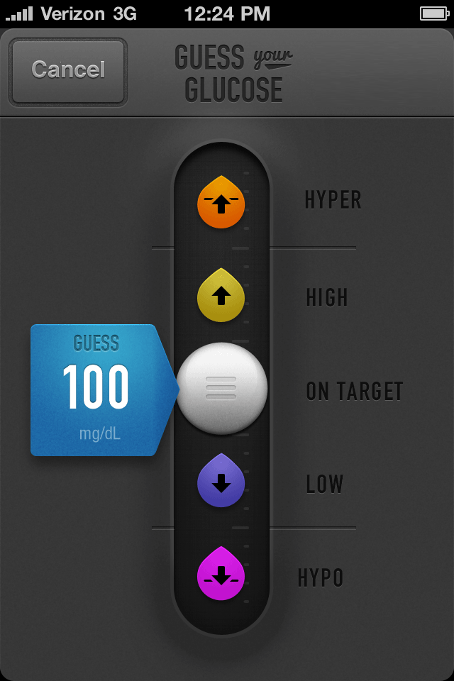

Projects for people
with diabetes
Interface and product
design for healthcare
Agamatrix makes medical devices for people with diabetes. As an intern, I developed a visual language for their mobile interfaces.

The guide emphasizes clarity, with larger-than-average touch targets and type size.

The system can accomodate additional warning messages as the legal and medical teams identify them, so app development works more smoothly with the risk management team.

A concept app that teaches people recently diagnosed with diabetes—especially children—how to identify the signs of high and low blood sugar.
These projects were made possible by a team of engineers, medical professionals, legal counsel, and designers. We designed a system that could accomodate new and changed language required by medical and legal teams quickly, without adding extra warning screens for the person using the app to fight through.